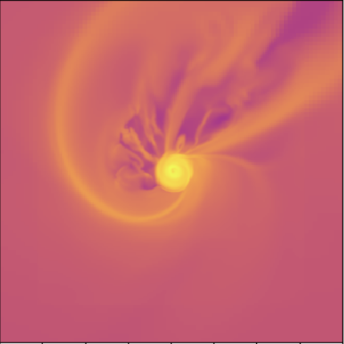
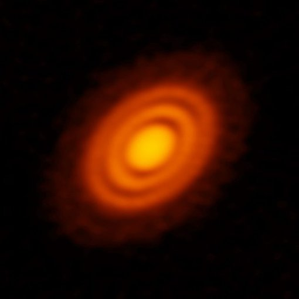

Research:
I'm interested in Computational Astrophysics, Plasma Astrophysics, and Planet/Star Formation.
|
|

|
Synthetic Observations of Protostellar Discs
Supervisor:Prof. Zhi-Yun Li & Dr. Yisheng Tu
Department of Astronomy, University of Virginia
Jul. 2024 - Present
•Analyzing the data of non-ideal MHD simulation of the formation of protostellar discs from the collapse of dense magnetized molecular cloud cores, to verify and correlate the observable physical quantities with the magnetic field strength.
•Conducting synthetic observations under various conditions to measure the observable physical quantities observationally and obtain the magnetic field strength indirectly.
|
|

|
Outer Protoplanetary Disk Wind Model
Supervisor:Prof. Xuening Bai
Department of Astronomy & Institute for Advanced Study, Tsinghua University
Sep, 2023 - present
•Obtained the steady-state solutions of Weber & Davis wind using Newton-Raphson method and reproduced the
solutions from ideal-MHD numerical simulations.
•Conducting non-ideal MHD numerical simulation with Athena++ with the steady solutions of Weber & Davis
wind as the initial conditions to develop a semi-analytic model for magnetized wind launching from regions
beyond disk outer truncation.
|
Other projects
|
Black Hole Shadow Calculation (TDLI Hands-on Project)
Supervisor:Prof. Yosuke Mizuno
Tsung Dao Lee Institute (TDLI), Shanghai Jiao Tong University
Jan, 2024
•Utilized the polarized General Relativistic Radiative Transfer (GRRT) simulation code RAPTOR to construct images and movies of M87 black hole and Sgr A*. Investigated the properties of black hole shadows under various conditions including changes in mass, inclination, and additional relevant parameters.
Presentation: slides about blackhole shadow calculation.
|
Numerical Simulation of Black hole Accretion
Supervisor:Prof. Feng Yuan
Shanghai Astronomical Observatory, CAS
Aug, 2023 - Oct, 2023
•Reproduced hydrodynamical non-radiative accretion flows with ZEUS-2D code to investigate the properties of non-radial rotating accretion flows by introducing an anomalous stress tensor to the equations of hydrodynamics. Carried out a set of two-dimensional (axially symmetric) hydrodynamic numerical experiments by using a simple starting configuration and a set of well-defined boundary conditions
|
Searching for Compact Object Candidates from LAMOST Time-Domain Survey
Supervisor:Prof. Wei Wang
Department of Astronomy, School of Physics and Technology, Wuhan University
Jul, 2022 - Dec.2024
•Searched for single-lined spectroscopic binary systems with phase-resolved radial velocity measurements using
Lomb-Scargle Algorithm and Monte-Carlo method, calculated the mass function of the unseen companions and
used Spectral Energy Distributions (SEDs) fitting to determine the stellar parameters.
|
|
{kind=link}